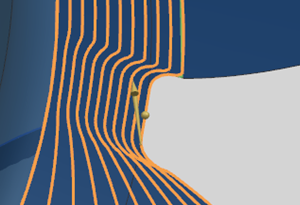
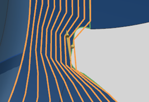

Streamline Cut Step enhancement
What is it?
For Streamline and Variable Streamline operations, you can now specify Cut Step values as a number or a tolerance. These parameters are the same as in the Surface Area drive method. In previous releases, NX used an internal number value of 100 for both First Cut and Last Cut. The previous system-defined values are now the default number values.
-
The Cut Step number values define the number of equal length segments into which the drive surface contour is divided to create the cut pattern.
-
The Cut Step tolerance values define the chordal tolerances used in following the drive surface contours.
Changing the Cut Step values changes the point distribution of a cut pattern, which is a factor in how accurately the cut pattern follows the drive surface contours. Cut patterns with more points can more accurately follow small details, such as fillets in a long boundary contour.
|
 |
 |
|
NX 8.5 user-controlled settings Cut Step = Number First Cut, Last Cut = 1000 |
Previous release system-controlled settings Cut Step = Number First Cut, Last Cut = 100 |
Why should I use it?
The Cut Step values help you to control the point distribution accuracy for how the cut pattern follows the drive surface contours.
If it is critical for the cut pattern to accurately follow along the shape of the drive surface boundaries, you can increase the Cut Step number values, or decrease the tolerances, to introduce more points into the drive contours. When the drive surfaces more accurately follow the shape of the part geometry, this can help improve the surface finish.
|
Note |
Excessive increase of the Cut Step number values may create more points in the tool path than is optimal for your controller. |
Where do I find it?
|
Application |
Manufacturing |
|
Location in dialog box |
Streamline or Variable Streamline operation dialog box→Drive Method group→Edit |